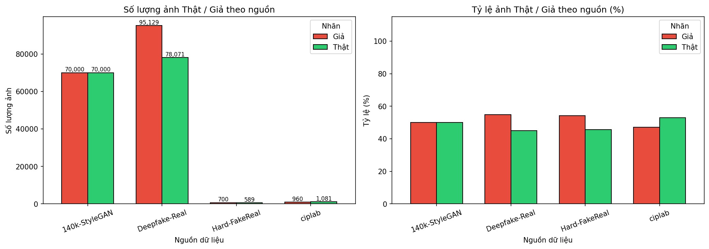
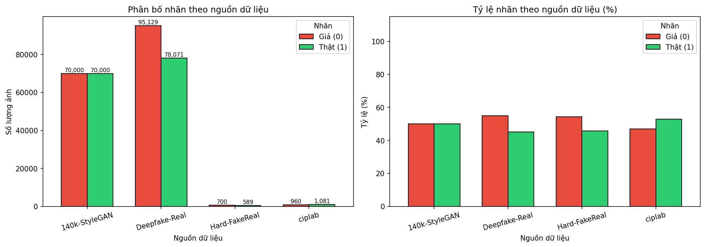
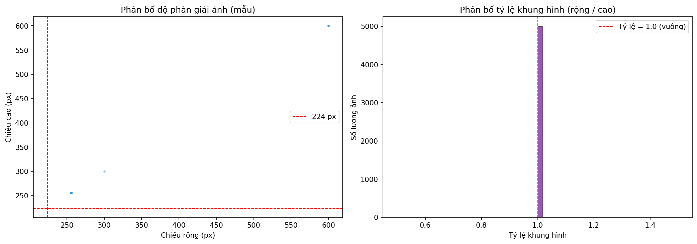
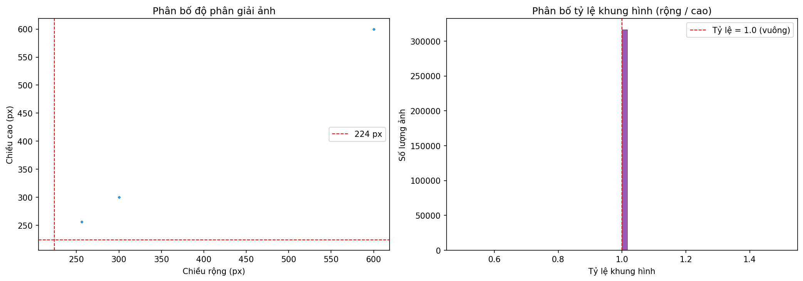
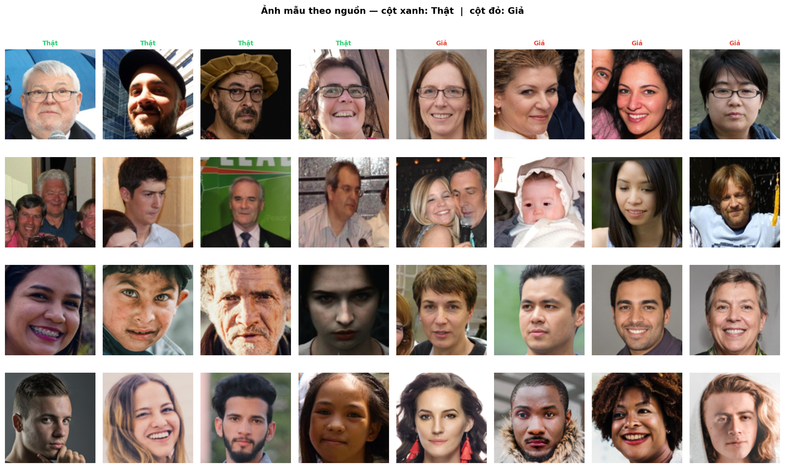
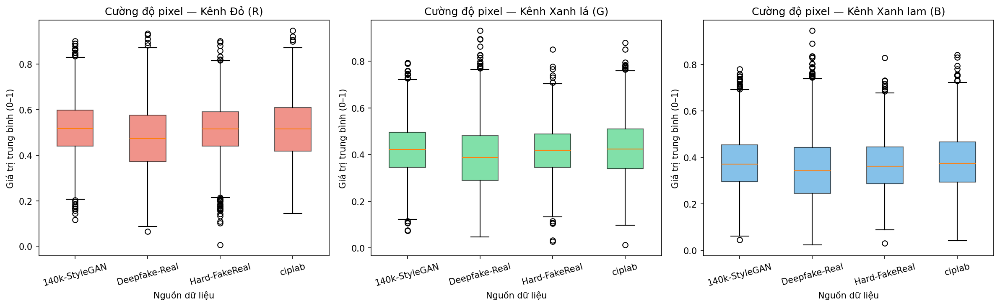
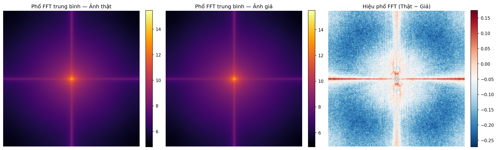
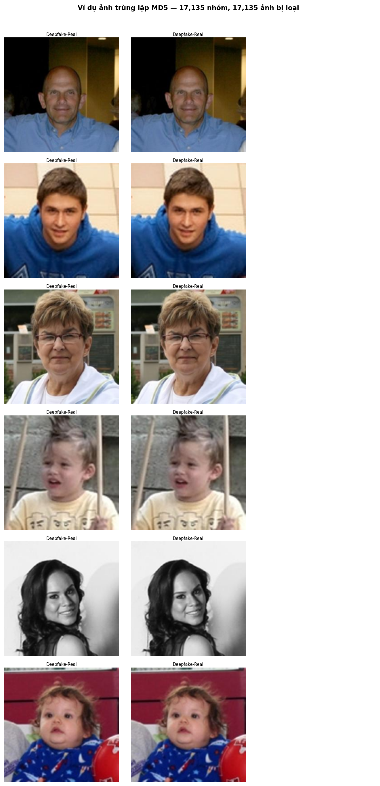

Thống Kê Nhanh
Mục đích: Cung cấp cái nhìn tổng thể về quy mô tập dữ liệu — số lượng ảnh, tỷ lệ nhãn, số nguồn và cách phân chia — trước khi đi vào phân tích chi tiết từng khía cạnh.
Phân Bố Lớp Theo Nguồn Dữ Liệu
Mục đích: Kiểm tra xem số lượng ảnh Thật và Giả trong từng nguồn có gần bằng nhau không — nếu quá lệch, mô hình AI sẽ bị "thiên vị" và nhận diện kém. Cũng kiểm tra xem một nguồn có chiếm quá nhiều không, để tránh mô hình chỉ học được một phong cách ảnh duy nhất.


| Phát hiện | Hành động kỹ thuật |
|---|---|
| Tổng Thật/Giả lệch ~10% (149k vs 167k) | Cân nhắc pos_weight = n_fake / n_real ≈ 1.11 trong BCEWithLogitsLoss |
| 140k-StyleGAN chiếm đa số (~88%) | Stratified sampling theo nguồn trong DataLoader để tránh overfit StyleGAN |
| ciplab / Hard-FakeReal rất nhỏ | Augmentation mạnh hơn cho hai nguồn này; đảm bảo có trong test set |
Chất Lượng Ảnh: Độ Phân Giải & Tỷ Lệ Khung Hình
Mục đích: Xác định kích thước ảnh gốc từ tất cả các nguồn — mô hình AI cần ảnh đầu vào đúng 224×224 pixel. Bước này kiểm tra cách thu nhỏ ảnh hợp lý nhất để không làm méo hoặc cắt mất khuôn mặt trong quá trình chuẩn bị dữ liệu.


albumentations.Resize(224, 224) đủ dùng — không cần padding hay LongestMaxSize.
Lưới Ảnh Mẫu: Thật vs Giả Theo Từng Nguồn
Mục đích: Nhìn trực tiếp vào sự khác biệt giữa ảnh Thật và Giả từng nguồn — để xác nhận rằng sự khác biệt là có thật và có thể phát hiện được, đồng thời nhận ra những chi tiết nào thường "tố cáo" ảnh giả (vùng tai, đường viền mặt, nền ảnh).

Thống Kê Cường Độ Pixel R/G/B Theo Nguồn
Mục đích: Kiểm tra xem màu sắc và độ sáng trung bình của ảnh từ các nguồn khác nhau có tương đồng nhau không — nếu một nguồn có ảnh quá tối hay quá sáng bất thường, cần xử lý trước để tránh mô hình bị nhầm lẫn do chênh lệch ánh sáng thay vì nhận ra ảnh giả thật sự.

mean=[0.485, 0.456, 0.406], std=[0.229, 0.224, 0.225] — không cần histogram equalization hay CLAHE.
Phân Tích Phổ Tần Số (FFT): Thật vs Giả
Mục đích: Tìm "dấu vân tay kỹ thuật số" ẩn mà mắt thường không thấy nhưng máy tính có thể học — ảnh do AI tạo ra thường để lại các rung động bất thường ở mức chi tiết siêu nhỏ. Phát hiện này giúp quyết định cách huấn luyện mô hình tốt hơn, kể cả khi ảnh bị nén hay giảm chất lượng.

Cách đọc hình: Trung tâm = tần số thấp (hình dạng tổng quát). Vùng ngoài = tần số cao (chi tiết, dấu hiệu giả). Vùng sáng trong hình "Hiệu" = nơi ảnh Thật và Giả khác nhau nhiều nhất.
Tính Toàn Vẹn: Kiểm Tra Chồng Lấp Train / Val / Test
Mục đích: Đảm bảo quá trình chia dữ liệu không bị "gian lận" — nếu ảnh dùng để dạy AI cũng xuất hiện trong bộ bài kiểm tra, điểm số sẽ cao giả tạo. Bước này xác nhận kết quả cuối cùng thực sự đo lường khả năng của mô hình với ảnh chưa từng thấy.
MD5 Duplicate Viewer
Mục đích: Tìm và xóa các ảnh xuất hiện nhiều lần trong tổng dữ liệu — nếu cùng một ảnh được dạy nhiều lần, mô hình có thể "học thuộc lòng" thay vì thực sự học cách nhận diện. Bước này cũng ngăn ảnh huấn luyện vô tình lẫn vào bộ kiểm tra.

Không phát hiện ảnh trùng lặp — hình ảnh không được tạo ra.01_dataset_preparation.ipynb thực hiện MD5 dedup trước khi tạo CSV splits — dữ liệu train/val/test đã sạch.
duplicate_hashes.parquet lưu trong assets/ — tái sử dụng để tăng tốc khi thêm dataset mới.
Bảng Tổng Hợp Thống Kê Theo Nguồn
Mục đích: Tổng hợp toàn bộ số liệu thống kê vào một bảng — bao nhiêu ảnh mỗi loại, từ nguồn nào, cân bằng ra sao. Bảng này là "bản tóm tắt" của toàn bộ EDA và sẽ được trích dẫn trực tiếp trong báo cáo khoa học.
| Nguồn | Tổng | Thật | Giả | T/G Ratio | % tổng |
|---|---|---|---|---|---|
| 140k-StyleGAN | 140,000 | 70,000 | 70,000 | 1.000 | 44.2% |
| Deepfake-Real | 173,200 | 78,071 | 95,129 | 0.820 | 54.7% |
| Hard-FakeReal | 1,289 | 589 | 700 | 0.841 | 0.4% |
| ciplab | 2,041 | 1,081 | 960 | 1.126 | 0.6% |
| Tổng cộng | 316,530 | 149,741 | 166,789 | 0.898 | 100% |
pos_weight ≈ 1.11 trong BCEWithLogitsLoss để bù mất cân bằng.
Quyết Định Kỹ Thuật Từ EDA
Mục đích: Tổng hợp mọi phát hiện từ EDA thành danh sách hành động cụ thể cho bước huấn luyện AI tiếp theo — đây là "kết quả thực tế" của toàn bộ quá trình phân tích, trả lời câu hỏi "vậy chúng ta phải làm gì khác đi so với mặc định?"
| Phát hiện từ EDA | Quyết định kỹ thuật |
|---|---|
| 140k-StyleGAN chiếm ~44% tập tổng | Stratified sampling theo nguồn trong DataLoader |
| Ảnh đã ở 224×224 hoặc 256×256 vuông | Resize(224, 224) không cần padding |
| Phân bố pixel gần với ImageNet | Dùng ImageNet normalization stats trực tiếp |
| FFT: ảnh Giả có artifact tần số cao | Thêm ImageCompression(quality_lower=40) vào train_transform |
| Ba tập train/val/test độc lập hoàn toàn | Đánh giá final trên test set là tin cậy |
| T/G Ratio ≈ 0.898 (lệch ~10%) | pos_weight = 166789 / 149741 ≈ 1.11 trong loss |
| 17,135 ảnh trùng đã loại bỏ | Ghi nhận trong phần Dataset báo cáo: "Sau dedup MD5, giữ lại 316,530 ảnh" |